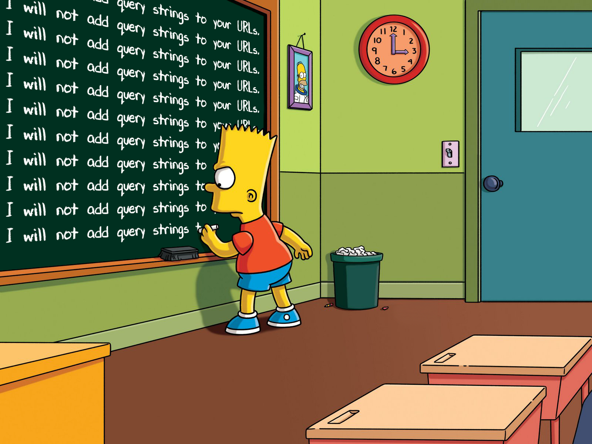

Last evening, a short blog post appeared in my feed reader that felt as if it spoke directly to me. It is Chris Morgan's short and excellent post called I've banned query strings.
Chris is someone whose Internet comments I have been reading for about half a decade now. I first stumbled upon his comments when he left very detailed feedback on one of my collections of CSS rules on Hacker News. I am by no means a web developer. I have spent most of my professional life doing systems programming in C and C++. However, developing websites and writing small HTML tools has been a long-time hobby for me. I have learnt most of my web development skills as a hobbyist by studying what other people do: first by viewing the source of websites I liked in the early 2000s, and later by occasionally getting possessed by the urge to implement a new game or tool and searching MDN Web Docs to learn whatever I needed to implement those hobby projects. One problem with learning a skill this way is that you sometimes pick up habits and practices that are fashionable but not necessarily optimal or correct. So it was really valuable to me when Chris commented on my collection of boilerplate CSS rules. It helped me improve my CSS a lot. In fact, a few of the lessons from his comment have really stuck with me; I keep them in mind whenever I make a hobby HTML project: always retain underlines in links and retain purple for visited links.
I have been following Chris's posts and comments on web-related topics since then. He often posts great feedback on web-related projects. Whenever I come across one, I make sure to read them carefully, even when the project isn't mine. I always end up learning something nice and useful from his comments. Here is one such recent example from the Lobsters story Adding author context to RSS.
A couple of months ago, I created a new project called Wander Console. It is a small, decentralised, self-hosted web console that lets visitors to your website explore interesting websites and pages recommended by a community of independent personal website owners. For example, my console is here: susam.net/wander/. If you click the 'Wander' button there, the tool loads a random personal web page recommended by the Wander community.
What is the Wander community? It is simply the set of website owners who have chosen to host this tool on their websites. The tool consists of one HTML file that implements the console and one JavaScript file where the website owner defines a list of neighbouring consoles along with a list of web pages they recommend. If you copy these two files to your web server, you instantly have a Wander console live on the Web. You don't need any server-side logic or server-side software beyond a basic web server to run Wander Console. You can even host it in constrained environments like Codeberg Pages or GitHub Pages. When you click the 'Wander' button, the console connects to other remote consoles, fetches web page recommendations, picks one randomly and loads it in your web browser. There are currently over 50 websites hosting this tool. Together, they recommend over 1500 web pages. You can find a recent snapshot of the list of known consoles and the pages they recommend at susam.codeberg.page/wcn/.
To learn more about this tool or to set it up on your website, please see codeberg.org/susam/wander.
In case you were wondering why I suddenly plugged my project into this post in the previous section, it is because I recently added a dubious feature to that project that I myself was not entirely convinced about. That misfeature is relevant to this post.
In version 0.4.0 of Wander Console, I added support for
a via= query parameter while loading web pages. For
example, if you encountered midnight.pub
while using the console at susam.net/wander/,
the console loaded the page using the following URL:
https://midnight.pub/?via=https://susam.net/wander/This allowed the owner of the recommended website to see, via their access logs, that the visit originated from a Wander Console. Chris's recent blog post is critical of features like this. He writes:
I don't like people adding tracking stuff to URLs. Still less do I like people adding tracking stuff to my URLs.
https://chrismorgan.info/no-query-strings?ref=example.com? Did I ask? If I wanted to know I'd look at theRefererheader; and if it isn't there, it's probably for a good reason. You abuse your users by adding that to the link.
I mentioned earlier that I was not entirely convinced that adding a referral query string was a good thing to do. Why did I add it anyway? I succumbed to popular demand. Let me briefly describe my frame of mind when I considered and implemented that feature. When I first saw the feature request on Codeberg, my initial reaction was reluctance. I wasn't convinced it was a good feature. But I was too busy with some ongoing algebraic graph theory research, another recent hobby, with a looming deadline, so I didn't have a lot of time to think about it clearly. In fact, everything about Wander Console has been made in very little time during the short breaks I used to take from my research. I made the first version of the console in about one and a half hours one early morning when my brain was too tired to read more algebraic graph theory literature and I really needed a break. During another such break, I revisited that feature request and, despite my reservations, decided to implement it anyway.
Normally, I don't like adding too many new features to my little projects. I want them to have a limited scope. I also want them to become stable over time. After such a project has fulfilled some essential requirements I had, I just want to call it feature complete and never add another feature to it again. I'll fix bugs, of course. But I don't like to keep adding new features endlessly. That's my style of maintaining my hobby projects. So it should have been very easy for me to ignore the feature request for adding a referral query string to URLs loaded by the console tool. But I think a tired body and mind, worn down by long and intense research work, took a toll on me.
Although my gut feeling was telling me that it was not a good feature, I couldn't articulate to myself exactly why. So I implemented the referral query string feature anyway. While doing so, I added an opt-out mechanism to the configuration, so that if someone else didn't like the feature, they could disable it for themselves. The fact that I didn't have a lot of time to reason through the implications of this feature meant that I just went ahead and implemented it without thinking about it critically. As the famous quote from Jurassic Park goes:
Your scientists were so preoccupied with whether or not they could that they didn't stop to think if they should.
It would soon turn out that my gut feeling was correct. After I implemented that feature, one of my favourite pages refused to load in the console:
https://int10h.org/oldschool-pc-fonts/fontlist/
Normally, the above URL would load fine, but now the console was altering the URL by adding a query string to it while loading it. The modified URL would not load. For example, try visiting the following modified URL:
https://int10h.org/oldschool-pc-fonts/fontlist/?foo
The above URL returns an HTTP 404 error page. Now, with a little time to breathe and some hindsight, I could articulate why adding referral query strings to a working URL is such a bad idea. Altering a URL gives you a new URL. The new URL could point to a totally different resource, or to no resource at all, even if the alteration is as small as adding a seemingly harmless query string. By adding the referral query string, I had effectively broken a working URL belonging to a website I am very fond of. There is also a moral question here about whether it is okay to modify a given URL on behalf of the user in order to insert a referral query string into it. I think it isn't.
In the end, I decided to remove the misguided referral query string feature from Wander Console. But my ongoing research work left me with no time to do it. When Chris's post I've banned query strings appeared in my feed reader last evening, it pushed me enough to sacrifice a little time from my academic hobby and devote it to removing that ill-considered feature. The feature is now gone. See commit b26d77c for details. The latest release, version 0.6.0, does not have it anymore.
This is a lesson I'll remember for any new hobby projects I happen to make in the future. If I ever load URLs again, I'll load them exactly as the website's author intended. I will never add query strings to your URLs.
